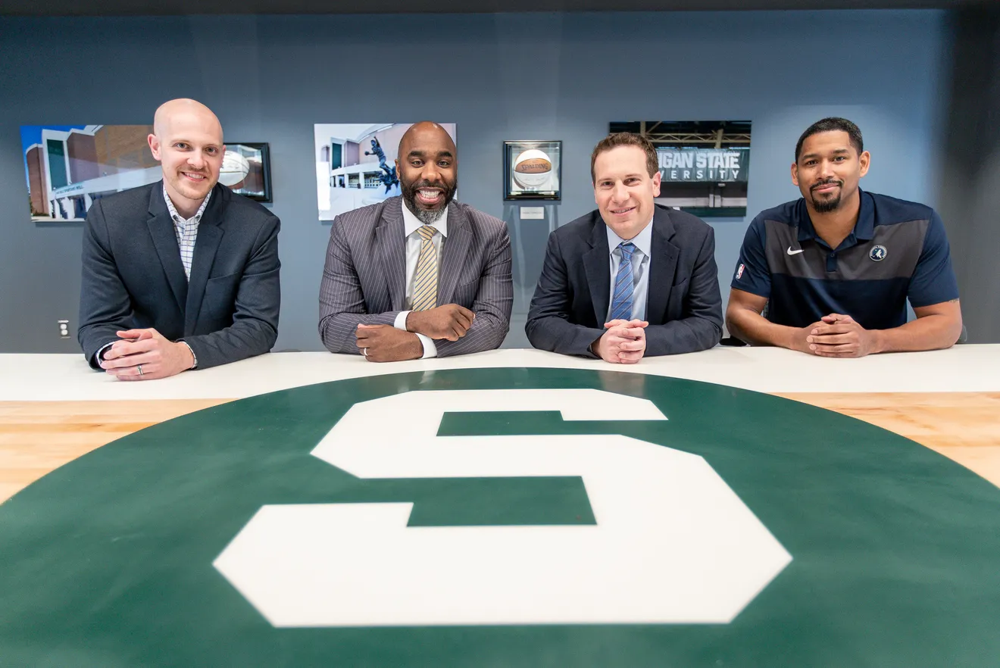
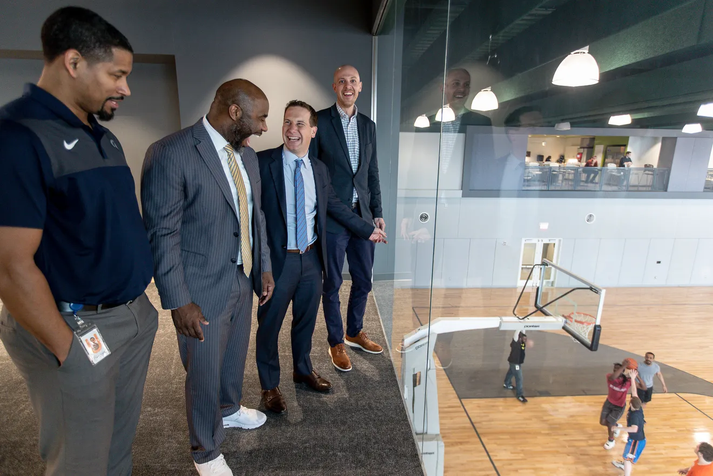
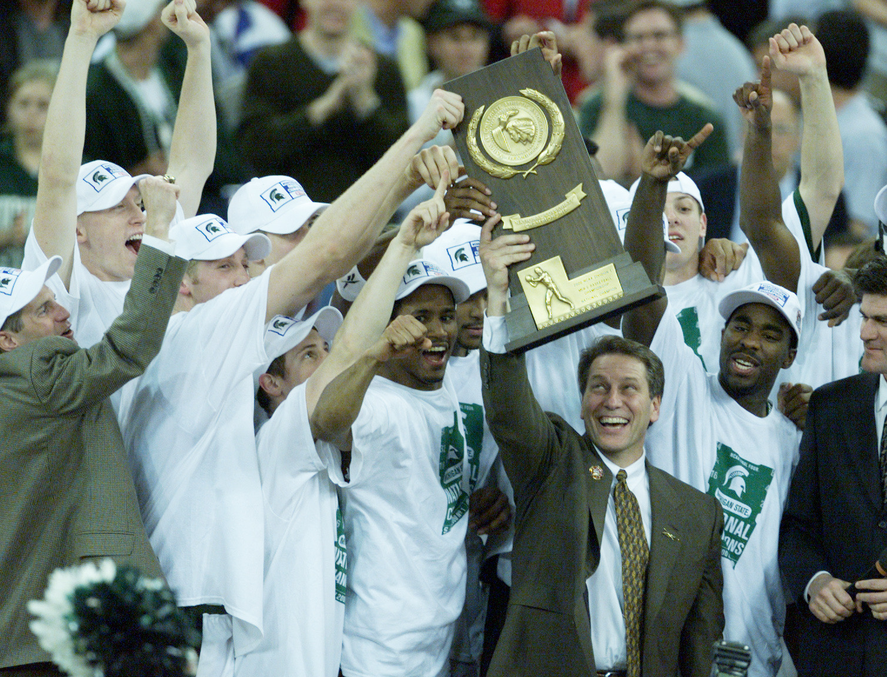

AdamWolfe
JD MBABuilding the neuro-symbolic AI for medicine.
About
I have spent my career building the architecture, governance, and teams that let complex organizations operate at massive scale without losing sight of what matters.
Every chapter of my career has come down to the same truth: high-stakes systems fail when complexity outpaces clarity. Chroneme applies that lesson where the stakes are highest. I am building it as Co-Founder and CEO alongside Zohaib Akhtar, whom I met while earning my MBA at Northwestern Kellogg.
Chroneme is an advanced clinical intelligence system powered by neuro-symbolic AI. Unlike black-box models that guess from patterns alone, it pairs deep learning with explicit clinical logic—so it notices early signals in a patient the way a great physician does, and shows its reasoning at every step. Across 124,000 patient encounters and active oncology early-detection trials, we are proving that clinical AI can be both extraordinarily capable and completely transparent.

Alongside Chroneme, I co-founded EASE Compliance Advisors, co-own Teton Group, and advise founders through Court Vision.
Outside work, I live in Birmingham, Michigan with my wife of 23 years, Marissa, and our three children. When I’m not working, I’m usually training for the next HYROX race, logging early-morning miles, or out on the golf course.

Before founding Chroneme, I served as Executive Vice President, Chief Legal & Administrative Officer, and Board Secretary at United Wholesale Mortgage—helping take the business from private hyper-growth to the nation’s largest mortgage lender and a landmark public listing on the New York Stock Exchange. Earlier in my career, I solved operational problems across technology portfolio companies at Rock Ventures and practiced enterprise law at Troutman Pepper.


That discipline started early. At Michigan State University, where I earned my undergraduate and law degrees, playing basketball for Tom Izzo and winning the 2000 NCAA National Championship taught me what daily championship habits actually look like when the pressure is real.


Writing
-
18 Oct 2026 · Clinical AI · 6 min
What 124,000 patient encounters taught us about neuro-symbolic medicine
Most clinical AI models stall before they reach a second hospital because they memorize hospital workflows instead of reasoning through physiology. Here is what happens when you separate the two.
-

14 Sep 2026 · Scale & Governance · 4 minWhy regulated industries don’t have an AI problem—they have an auditability problem
Reflections from the Midwest Technology Summit on why healthcare and financial institutions cannot deploy systems that cannot explain their own decisions.
-

25 Aug 2026 · Building Chroneme · 1 minAdam Wolfe @ Chroneme ↗
Closing my chapter at United Wholesale Mortgage to build the clinical intelligence layer medicine has been missing alongside Zohaib Akhtar.
-
19 Jul 2026 · Clinical AI · 5 min
Catching pancreatic cancer before the symptoms arrive
In oncology, the difference between a treatable stage and a late diagnosis is often hidden in subtle, longitudinal signals months earlier.
-

10 May 2026 · Building Chroneme · 4 minFrom Breslin Center to the boardroom: what carries over
On standards, preparation, and why the best teams never confuse activity with execution.
Photographs
Moments from Chroneme, United Wholesale Mortgage, Michigan State, and home. Click any photograph for the story.
Work
Chroneme, Inc. — Continuous clinical intelligence
Building neuro-symbolic AI that combines deep pattern recognition with explicit medical logic, validated across 124,000 patient encounters and active health-system oncology collaborations.
United Wholesale Mortgage (NYSE: UWMC) — Hyper-growth to public scale
Led legal, governance, board administration, and operating subsidiaries through the company’s ascent to the #1 mortgage lender in the United States and its record-setting NYSE public listing.
EASE Compliance Advisors, Teton Group & Court Vision
Co-founded EASE from inception as an independent regulatory compliance firm; co-own Teton Group with partner Timothy Pfund; and back disciplined operators through Court Vision.
Rock Ventures, Troutman Pepper, Kellogg & Michigan State
Executive problem solving across Rock Ventures portfolio companies (StockX, Bedrock, JACK Entertainment), corporate practice at Troutman Pepper, MBA at Northwestern Kellogg, JD and BA at Michigan State University, and 2000 NCAA National Champion under Coach Tom Izzo.